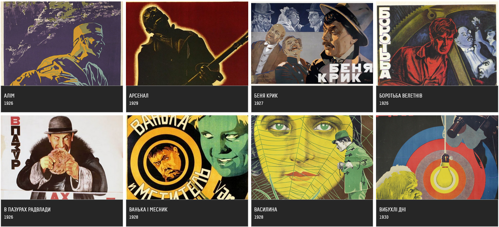

Довженко-Центр
Національний центр Олександра Довженка (Довженко-Центр) – найбільший кіноархів України, в якому зберігається більше 9000 найменувань художніх, документальних, анімаційних українських та закордонних фільмів та тисячі архівних документів з історії українського кіно.
Заснований у 1994 році на базі найбільшої за часів СРСР української кінокопіювальної фабрики (заснованої в 1938 році), Довженко-Центр сьогодні – одна з найдинамічніших культурних інституцій України з широким міжнародним представництвом у кіногалузі.
Довженко-Центр об’єднує сучасне фільмосховище з системою клімат-контролю, єдину в Україні кінокопіювальну лабораторію, Музей кіно, паперовий кіноархів, медіатеку та власне видавництво й здійснює збереження, популяризацію, дослідження та поширення національної кіноспадщини в Україні та закордоном.
Зміст
- Історія
- Про колекцію
- Місія
- неіснуючий пункт 1
- неіснуючий пункт 2
- Діяльність
- Реорганізація
Історія
Національний центр Олександра Довженка створено 10 вересня 1994 року Указом Президента України «Про заходи щодо відзначення 100-річчя від дня народження Олександра Довженка». Де-факто розпочав роботу в 1996 році. 2000 року внаслідок реорганізації до Центру приєднано ліквідовану Київську кінокопіювальну фабрику (засновану в 1938 році), на території якої він розмішувався з 1996 року. Фільмофонд фабрики ліг в основу кіноколекції Центру.
2016 року розпочато реформування Центру, що передбачало його перетворення з промислового підприємства на культурну установу, згідно з Концепцією розвитку, представленою громадськості 2015 року. Навесні 2019 року генеральний директор Центру Іван Козленко заявив про успішне завершення процесу реформування.
Від вересня 2017 року на базі Центру працює перформативна платформа «Сцена 6», майданчик для розвитку незалежних театрів.
14 вересня 2018 року розпочався перший сезон регулярних подій Центру у власних приміщеннях.
29 березня 2019 року відповідно до наказу Міністерства культури України № 256 «Про реорганізацію державного підприємства „Українська кіностудія анімаційних фільмів“» до Центру приєднано кіностудію Укранімафільм, правонаступником якої став Центр.
12 вересня 2019 року розпочав роботу заснований восени 2015 року Музей кіно Довженко-Центру загальною площею понад 1 500 м². Музей відкрився мультимедійною виставкою «ВУФКУ. Lost&Found», присвяченою історії українського кінематографа 1920-х років.
Про колекцію
Станом на 1 січня 2021 року на зберіганні в Центрі Довженка знаходиться більше 60 283 одиниць зберігання кіноматеріалів (більше 7 000 найменувань кінотворів) — художніх, анімаційних, документальних та науково-популярних фільмів здебільшого українського виробництва. Більшість із них представлені на вихідних матеріалах — негативах і контратипах, частина також — на позитивних плівках та цифрових носіях. В Центрі Довженка зберігаються вихідні матеріали всіх українських фільмів, створених після 1992 року. Матеріали фільмів радянського періоду здебільшого представлені на контратипах або позитивних плівках.
Найстаріший фільм, що зберігається в фондах Центру Довженка — нітратна плівка 1909 року. Найстаріший художній фільм українського радянського виробництва - 1922 року.
З 1992 року в Центр Довженка також надходять плівки українських документальних фільмів, основний фонд яких радянського періоду перебуває на зберіганні в Центральному державному кінофотофоноархіві України ім. Г. С. Пшеничного.
Місія
Довженко-Центр займається збереженням, відновленням, вивченням та популяризацією національної кіноспадщини України. Здійснює наукові дослідження в галузі кінематографії, провадить видавничу та виставкову діяльність, забезпечує промоцію та дистрибуцію національних фільмів, сприяє розвитку мистецтв. Згідно з Законом України «Про кінематографію», вихідні матеріали всіх українських стрічок, створених (у тому числі частково) державним коштом, надходять на довічне зберігання до Центру.
Діяльність
Протягом 2007—2010 та 2011—2014 років Центр Довженка здійснював програму реставрації українського кінематографа, в рамках якої відреставровано десятки фільмів 1920—1980-х років, зокрема колекції фільмів Олександра Довженка, Івана Миколайчука, Юрія Іллєнка, раннього українського кіноавангарду (серія «Коло Дзиґи»), документального кіно («Документи епохи»), фільмів про Чорнобильську катастрофу та інші, згодом видані на DVD.
Центр провадить активну культурну та популяризаційну діяльність. Зокрема, неодноразово був організатором національних стендів на кіноринках Каннського, Берлінського, Карловарського міжнародних кінофестивалів, ретроспектив в Україні та за кордоном. Серед відомих серійних культурних проєктів Центру — національний кінопрокат кращих українських короткометражних фільмів року «Українська нова хвиля», покази реставрованих українських німих фільмів з музичним супроводом наживо «Коло Дзиґи», освітній проєкт «Культурфільм», фестиваль німого кіно та сучасної музики «Німі ночі», щорічна національна ретроспектива ОМКФ. Завдяки ретроспективам Довженко-Центру українському глядачеві було повернуто такі «забуті» фільми, як «Документи епохи» (1928), «Людина і мавпа» (1930), «Дорога в Парадіз» (1991), «Шамара» (1994) тощо.
Над створенням нових саундтреків до німих фільмів на замовлення Центру працювали відомі українські музиканти: ДахаБраха, Антон Байбаков, Вагоновожатые, Zapaska, Юрій Кузнецов, Олександр Кохановський.
В 2011—2017 роках видано низку щорічних каталогів українських фільмів, серію фотоальбомів («Кінооко»), дослідницьких розвідок та монографій.
Відвідуваність заходів у Довженко-Центрі у 2019 році загалом склала 55 тис. осіб. Якщо початок активної публічної діяльності Довженко-Центру у 2018 році мав на меті сформувати лояльне ядро аудиторії й базувався на регулярних серійних подіях (щотижневі кіноклуби, кінолекторій «Культурфільм», екскурсії фільмофондом, книжкові події та дні аматорського кіно), то у 2019 відвідуваність значно збільшилась з відкриттям нових просторів Музею кіно та Кінолекторію.
Реорганізація
5 серпня Державне агентство України з питань кіно видало наказ про реорганізацію Довженко-Центру. За ним, нинішні обов’язки центру виконуватимуть три юридичні особи: держустанова «Науковий центр кінематографії України», сам Довженко-Центр та виокремлена з його структури Українська анімаційна студія.
Представники центру пояснюють, що наказ про реорганізацію Довженко-Центру де-факто означає ліквідацію національного кіноархіву.
Згідно з наказом Держкіно всі фільми з колекції та майно Довженко-Центру мають передати «Науковому центру кінематографії України». Представники центру заявляють, що це «де-факто “спляча” установа, що з моменту заснування не здійснювала жодної діяльності, не має штату, відповідних компетенцій, сайту тощо».
Наразі здійснюється збір підписів заради скасування реорганізації Довженко-Центру.